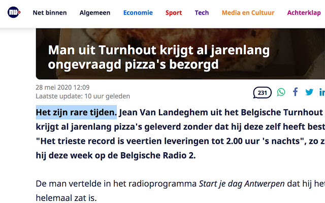

😷
Rare Tijden
Een browserextensie die de zin 'Het zijn rare tijden' voor artikelen zet op de grootste Nederlandse en Vlaamse nieuwssites

Het zijn rare tijden*. En daarom heb ik deze extensie gemaakt voor Chrome en Firefox. Installeer 'm en je krijgt die zin te zien voor élk artikel op de grootste Nederlandse en Vlaamse nieuwssites.
* In België zijn het vreemde tijden.
Op welke sites werkt dit?
Onder andere op:
- AD
- Linda
- Metro Nieuws
- NOS
- NRC
- NU.nl
- Parool
- RTL Nieuws
- Telegraaf
- Trouw
- Volkskrant
- Pointer
- De Standaard
- De Morgen
- De Tijd
- Het Laatste Nieuws
- VRT Nieuws
- Nieuwsblad
Wie heeft deze extensie gemaakt?
Hay Kranen
Kan ik de code zien?
Ja, op Github
Waar kan ik een verzoek indienen voor mijn favoriete nieuwssite?
Ook op Github
Ik vind het zo leuk dat ik iets wil doneren. Kan dat?
Ja! Hier vind je hoe dat werkt.